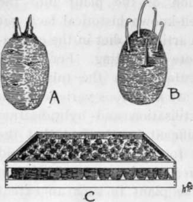
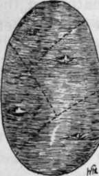
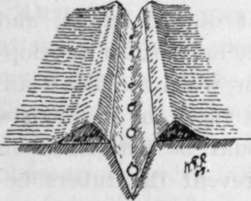
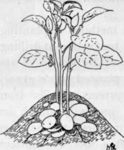

Chapter X. The Potato
Description
This section is from the book "School Gardening", by W. Francis Rankine. Also available from Amazon: School Gardening.
Chapter X. The Potato
THE Potato is the most important crop of the vegetable garden, and successful growing demands careful culture and thorough soil cultivation. The introduction of the plant into the gardens of England is a well-known historical fact, yet its subsequent progress as an article of diet in the estimation of the people is far more interesting. For several years raisers have experimented upon the tuber with the result that to-day there are numerous varieties upon the market. This cross-fertilisation and hybridisation has been made the more difficult by the fact that the Potato is extremely liable to the attacks of fungoid diseases. Thus the production of a new strain has often weakened the stamina of the plant to such an extent that the susceptibility to the disease has been increased. At present there is no "disease proof" Potato, although there are many varieties that may be grown more or less successfully in spite of potato disease and leaf curl.
Potatoes require a deep and friable soil, which should have been well manured some time previously to planting. Such a medium is obtained in the light loams that often occur in the thoroughly well-cultivated soils in the chalk or limestone districts. In addition to these requisites the Potato in common with the Tomato, its cousin, demands drainage, and little success can result from growing Potatoes in low-lying and imperfectly drained soils. In general the ground should be prepared in autumn, and the manuring must be performed so that the sets, when planted, do not come into direct contact with the manure. To prevent this, place the manure a foot below the surface.
In propagating the potato, " sets " are employed, and their preparation for planting requires much care and attention. In fact, the selection of the "set" is of paramount importance. If the grower intends planting seed selected from his previous year's crop, he must carefully examine the tubers soon after they are lifted in autumn. The selected " sets " should then be stored under conditions that will favour early development. These conditions are secured by placing them in a well lighted shed which is frost-proof. These stored sets, are placed in shallow boxes or trays, in January, and kept in a dry and perfectly ventilated situation. Shoots soon appear, and one or two of the strongest of these are allowed to develop ; the weaker sprouts are rubbed off. In this way sets with strong growths are prepared for planting. For purposes of planting, whole sets weighing about three ounces are the most suitable. In the case of larger sets, it is necessary to cut them into sections so that each division contains a strong eye. These sliced sets should weigh about three ounces, and, before proceeding to plant, it is a good practice to dip the cut surface in lime as a safeguard against the development of fungoid diseases.
Fig. 36. seed potatoes.
A.-A good set. B.-A weakling. C.-A potato box for sprouting seed.
Fig. 37. how to divide a large set.
Planting
Potato planting may be done from the middle of March to the end of May. In sheltered positions or on borders facing south, planting may be performed late in February. Naturally, the time of planting depends greatly on the character of the soil and the aspect of the garden.
There are several methods of planting, but undoubtedly the best is that of drilling. It certainly demands more time, yet by means of the extra pains and time, the crop is planted more evenly and thoroughly than by other systems. Drills from four to six inches in depth are made, and in these the sets are placed about a foot to eighteen inches apart. The drills should be two feet to three feet asunder " according to the height of the haulm. Tall growing varieties must be placed three feet apart.
The dibber is often used in planting ; in this case a hole is made and a Potato is dropped in. Quickness is the only argument in favour of this method, and often the shoots of the sets are broken when the Potato is dropped into the hole. Also by this method the tubers are planted at varying depths with the result that the plants are uneven when the leaves appear.
Fig. 38. planting potatoes in drills.
The depth of planting depends on the nature of the soil, the time of planting, and the forwardness of the set In light soils the sets may be planted eight inches down ; on heavy soils four inches is sufficient. The distance between plant and plant and row and row is determined, as already mentioned, by the height of the Potato to be grown. Short-topped Potatoes can be planted twelve inches apart with a distance of one foot nine inches between the rows. Tall growing varieties require eighteen inches and three feet between the rows.
When the plants are six inches high they must be earthed up, and previous to this operation a dressing of nitrate of soda should be given. This ensures a healthy development of the haulm, and consequently helps tuber development. Later, when the plants are about a foot high, the final earthing up should be performed in order to prevent the tubers becoming green through exposure to light.
When the Potatoes are ready for lifting the haulm turns yellow and withers; this should be removed and burned, especially if the crop has shown any evidence of the presence of fungus. The tubers must be carefully lifted and stored in a dry place. For this purpose a pit is dug and lined with straw or dried fern ; the tubers are put in, the pit is covered with soil so that it is frost-proof, and a small opening filled with straw is left for the escape of moisture. Such an arrangement is known as a potato pit or clamp.
Fig. 39. Earthing Up Potatoes.
The tubers are borne on underground stems which are distinct from the roots. Earthing up aids the development of the potatoes near the surface and also prevents " greening " of the tubers.
The selection of varieties for planting requires careful consideration. The nature of the soil is of the greatest importance, and often in the case of signal failure of a crop a change of seed will do good. Generally, for early crops, Duke of York may be recommended ; for main crop, British Queen, and for late use and storage, Factor.
Continue to: